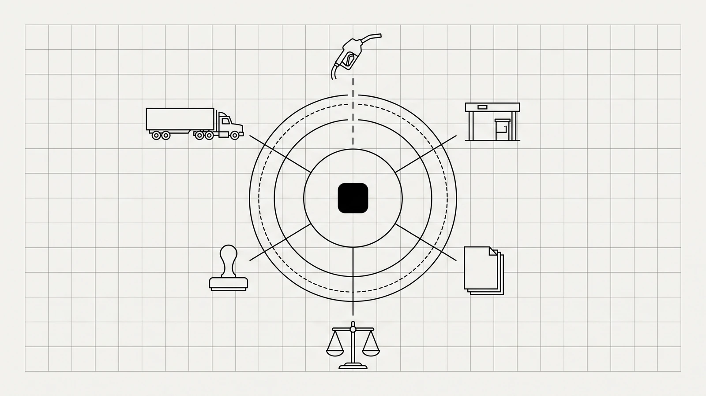

Qué puede y qué no puede hacer un agente de IA en el back office de una flota
Casi todo lo que se vende hoy como agentes de IA para transporte de carga es telemetría con nombre nuevo. Esta es la línea que le importa a un contralor: qué parte del ciclo puede tocar un modelo, qué parte tiene que quedarse en un motor determinista, y las cinco preguntas con las que se evalúa a cualquier proveedor — Likida incluido.

Un correo con la palabra «IA» en el asunto no dice nada. En el autotransporte mexicano ese término cubre hoy tres negocios distintos: mantenimiento predictivo sobre datos de telemetría, analítica de video en cabina, y sistemas que leen documentos y ejecutan pasos de un proceso administrativo. Solo el tercero toca el back office, y es del único que trata esta nota.
La pregunta útil no es si la herramienta «usa IA». Es dónde entra exactamente el modelo, qué parte del resultado depende de él, y qué hace el sistema el día que se equivoca. Un director de operaciones puede contestar eso sin saber nada de redes neuronales. Hacen falta cinco preguntas, y están más abajo.
Qué es un agente de IA y en qué se distingue de un chatbot
Un chatbot responde; un agente ejecuta. El chatbot recibe una pregunta y devuelve texto. El agente recibe un objetivo, decide qué pasos dar, llama herramientas —consultar un servicio, abrir un archivo, escribir en una base de datos— y se detiene cuando cumple una condición de terminación que alguien definió. La diferencia práctica es que el agente deja rastro de acciones, no nada más de conversación.
Esa distinción separa al asistente que te resume la política de viáticos del sistema que abre un CFDI, verifica su estado contra el SAT y marca una liquidación como no cerrable. El primero no se puede equivocar caro. El segundo sí.
Qué sí puede hacer hoy en el back office de una flota
Las tareas donde los agentes de IA para transporte de carga rinden hoy tienen todas la misma forma: entrada desordenada, regla clara, salida verificable. Ese es el perfil del papeleo de una liquidación.
Trabajo que ya se puede delegar
- Leer la foto arrugada de un ticket de caseta o de diésel y sacar de ahí importe, fecha, folio y estación.
- Recibir por WhatsApp los comprobantes de un operador en carretera y acomodarlos contra el viaje al que pertenecen, sin que nadie los capture a mano.
- Cotejar el XML de un CFDI contra su representación impresa, que no siempre dicen lo mismo.
- Notar lo que falta: un viaje con dos casetas registradas en una ruta que tiene cinco.
- Vigilar el estado de los comprobantes ya recibidos y avisar cuando un proveedor cancela uno que ya entró a una liquidación cerrada.
- Redactar la aclaración que se le manda al proveedor cuando un comprobante de diésel no desglosa lo que debería.
Ninguna de esas tareas es lucidora y todas se comen el tiempo de gente cara. Nuestro censo pone el costo de cerrar un viaje a mano en unos $105, repartidos entre cinco puestos distintos; el desglose está en la nota sobre lo que cuesta liquidar. Casi todo ese costo es acarreo de papel, no criterio.
Censo propio de Likida, agosto 2026: ~$105 MXN por viaje liquidado a mano, en una banda de $94 a $115; cinco puestos tocan el ciclo.
Qué no puede hacer — y qué no debería intentar
Un modelo de lenguaje predice la continuación más plausible de un texto. Esa es su virtud leyendo un ticket borroso y su defecto haciendo aritmética. Un agente de IA no debe calcular la liquidación. Los importes —anticipos, comisiones, retenciones, el IEPS acreditable del diésel, el 50% del peaje— tienen que salir de un motor determinista: mismo dato de entrada, mismo resultado hoy y dentro de tres años, reproducible renglón por renglón.
La lista corta de lo que no le toca al modelo
- Calcular importes. Los suma código, no un modelo.
- Decidir si un gasto es deducible. Eso es criterio fiscal, y lo firma una persona.
- Emitir o cancelar un CFDI por cuenta propia.
- Cerrar una liquidación que no cuadra. Cuando falta evidencia, el sistema correcto se detiene y lo dice.
- Rellenar el dato que no encontró. Un campo vacío es una respuesta; un campo relleno con lo más probable es un pasivo.
El modelo lee y ordena. El motor calcula. Si la cifra final salió del modelo, no se puede defender.
Por qué la frontera es fiscal, no técnica
Esta línea no se traza por gusto de arquitectura. Se traza porque todo lo que el sistema produce en el camino —el ticket digitalizado, la validación del CFDI, la bitácora de por qué se rechazó un renglón— cae dentro de la contabilidad del contribuyente.
Léase despacio: «cualquier otro medio procesable de almacenamiento de datos» y «los equipos o sistemas electrónicos de registro fiscal y sus respectivos registros» son contabilidad. Lo que el agente escribe queda dentro del perímetro que la autoridad puede pedir, y el mismo Código obliga a conservar esa contabilidad cinco años (artículo 30). Un sistema que no puede enseñar cómo llegó a un número no es un sistema de back office: es una opinión rápida con interfaz bonita.
Cinco preguntas para evaluar a cualquier proveedor
Esta es la parte que se lleva a la junta. No hace falta entender el modelo para usarla: se pregunta, se anota la respuesta y se compara. Aplica igual a un ERP con módulo nuevo, a una startup de tres personas y a nosotros.
| La pregunta | Respuesta que sirve | Señal de alarma |
|---|---|---|
| ¿Qué hace cuando no está seguro? | Se detiene, marca el renglón y pide el documento que falta. | «Siempre entrega un resultado.» |
| ¿Cita la norma que aplicó? | Devuelve el artículo y la cuota vigente en la fecha del gasto, no en la de hoy. | Da el importe y ya. |
| ¿Se puede ver el rastro? | Cada cifra se abre hasta la foto del comprobante que la originó. | Un PDF final que nadie puede desarmar. |
| ¿Dónde viven los datos y quién los entrena? | Aislados por empresa, cifrados, y con la promesa por escrito de no entrenar modelos con ellos. | «Están en la nube.» |
| ¿Qué pasa cuando cambia una cuota? | Las reglas están versionadas con fecha de vigencia y el recálculo usa la fecha del hecho. | Hay que esperar la siguiente actualización del software. |
La tercera es la que casi nadie pregunta y la única que se vuelve urgente cuando llega un requerimiento. La quinta es la que separa un producto fiscal de una demo: las cuotas del IEPS de diésel y los estímulos de la Ley de Ingresos se publican en el DOF y cambian, y el gasto de marzo se tiene que seguir calculando con la regla de marzo aunque hoy sea agosto. Un sistema que solo conoce la regla vigente recalcula mal el pasado.
Lo que sigue necesitando manos humanas
Conviene decirlo en el mismo texto donde se explica lo que la tecnología sí hace. Hay partes de este problema que no se resuelven con software, ni ahora ni pronto:
- El criterio de deducibilidad en los casos de frontera. Alguien con cédula lo decide y lo firma.
- La negociación con el proveedor que se niega a desglosar el comprobante como debe.
- Lo que se le descuenta a un operador. Eso es un asunto laboral y de confianza, no de datos.
- Los errores de Carta Porte que ya se emitieron: el sistema los encuentra, pero corregirlos es trabajo de personas hablando entre áreas.
- El arranque. Los primeros viajes de cualquier flota se cuadran a mano contra el sistema hasta que los dos números coincidan; no hay atajo.
Y una nota de honestidad, porque la lista de cinco preguntas también se nos aplica: Likida no tiene todavía flotas en operación. No hay caso de éxito que enseñar ni porcentaje de ahorro que presumir. Lo que sí hay es una postura sobre dónde va la frontera, y esa postura se puede juzgar hoy, antes de firmar nada.
La próxima vez que llegue el correo
No preguntes si el sistema usa inteligencia artificial. Pregunta qué hace cuando no está seguro. La respuesta a esa sola pregunta ordena el mercado entero: los que contestan «se detiene y avisa» están construyendo para un contralor, y los que contestan «siempre te da un número» están construyendo para una demo.
- Código Fiscal de la Federación, artículo 28, fracción I, apartado A — última reforma publicada en el DOF el 9 de abril de 2026 — texto vigente.
- Código Fiscal de la Federación, artículo 30, tercer párrafo (plazo de conservación de cinco años) — misma publicación.
- Censo propio de Likida, agosto 2026: costo de liquidar un viaje a mano y puestos que tocan el ciclo.
¿Cuál de las cinco preguntas no sabrías contestar del sistema con el que hoy liquidas?
 Contáctanos
Contáctanos